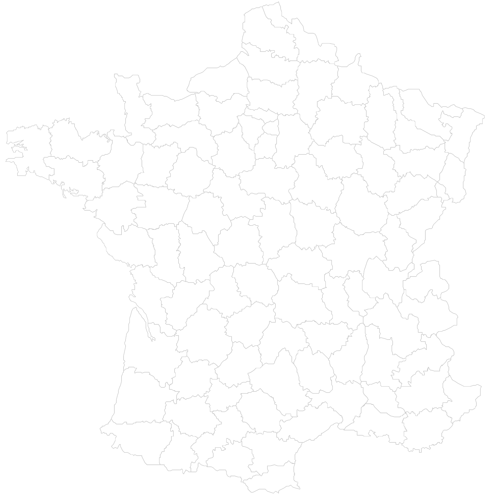

Compétences
- Outils :
- Ligne de commande
- Nano
- Github
- Trello
- Langages :
- HTML
- CSS
- JavaScript
- PHP
- Génériques :
- Management de projet
- Rédaction de cahier des charges
- Support à la production
- Veille technologique et règlementaire
- Relationnel technique clients et fournisseurs
- R&D Chimie de formulation
Diplôme et Expérience

Novembre 2018 - Juillet 2020
Tiamat - Amiens
Ingénieur Formulation (CDI)
- Développement de batterie à base d'ion sodium
- Veille technologique
- Reporting lors de réunions de collaboration avec l'université